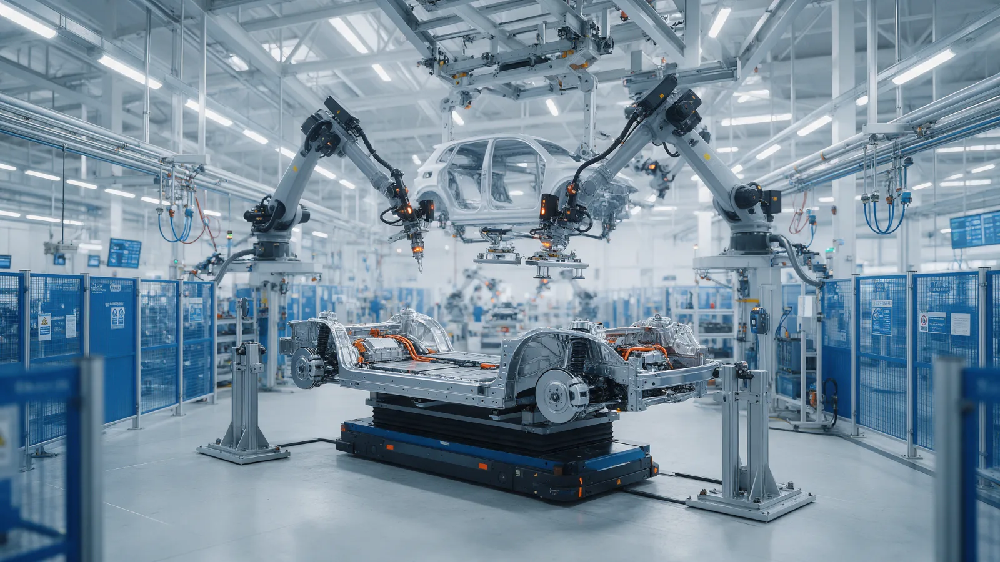

Plataforma KW-e
Uma base.
Cinco carros diferentes.
A KW-e é a plataforma que sustenta toda a linha Kraftweg. Ela escala de 210 kW a 570 kW sem trocar a arquitetura.
Bateria de estrutura celular
As células fazem parte da rigidez do carro, sem uma caixa intermediária. Isso reduz 40 kg, abaixa o assoalho e melhora a proteção em impacto lateral.
O pacote é dividido em módulos independentes. Se uma célula falha, o módulo é isolado e o carro segue rodando com autonomia reduzida até a assistência.
Como a KW-e vira cada modelo
De um a três
Um motor traseiro no K3 e no K5. Dois no KX e no K7. Três no KM1, com torque vetorizado por roda no eixo traseiro.
60 a 118 kWh
O mesmo formato de módulo, empilhado em quantidades diferentes conforme o entre-eixos de cada carro.
Molas, ar ou magnética
Molas no K3, suspensão pneumática do K5 ao K7 e amortecedor magnetorreológico no KM1.
O mesmo sistema
Toda a linha roda a mesma central de computação. Um recurso novo chega a todos os modelos ao mesmo tempo.
Recarga sem planejar demais
O planejador de rota calcula as paradas, pré-aquece a bateria antes de chegar ao carregador e mostra quanto tempo você fica em cada ponto.
Em casa, o carregador de parede de 11 kW completa uma carga noturna. Na estrada, 15 minutos rendem cerca de 300 km na maioria dos modelos.
Veja a plataforma em movimento.
Agende um test drive e experimente qualquer modelo da linha.